Create a dashboard account for a researcher or clinician, hand it over safely, and manage their access later. No coding needed: everything is done in the Supabase SQL Editor and the WearWise dashboard.
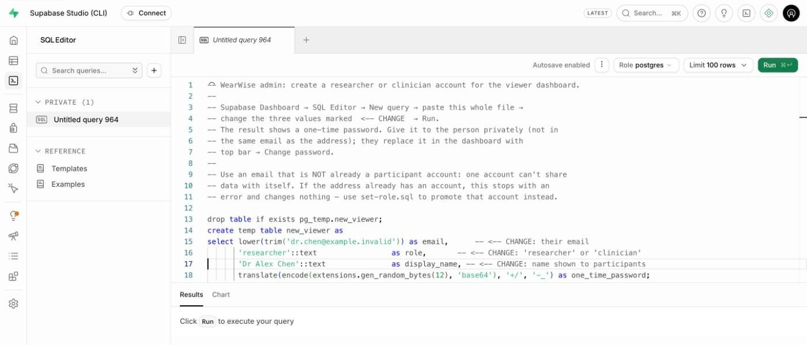
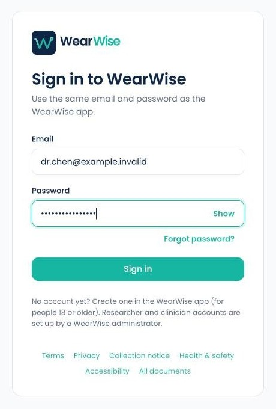
Handover release v1.0.0 · app 0.1.0 · firmware 0.9.6 October 2026 · WearWise Project Team Zakiul Atheef · Hari Bethelli · Siri Bethelli · Thevindu Kodagoda Munasinghage
Research prototype. Not a medical device.
Contents
The short version
Supabase Dashboard → SQL Editor → paste supabase/admin/create-viewer.sql → change the email, role and name → Run (choose Run without RLS if asked).
Send the person the dashboard address and their email. Send the one-time password separately and privately.
They sign in, accept the terms, and change the password (top-right menu → Change password).
Participants share with them using a share code from the WearWise app.
Part 1
Before you start
How dashboard access works, and what you need to have ready.
1How access works
WearWise participants own their data. A researcher or clinician (a "viewer") uses the web dashboard, and sees a participant's data only after that participant shares it with them. Viewer accounts can't be created by signing up: an administrator creates them, as described in this guide.
1
You create the account
In the Supabase SQL Editor. You get a one-time password to hand over privately.
2
They sign in
They accept the terms themselves and choose their own password.
3
Participants share
A participant creates a one-time share code in the app. The researcher enters it on the dashboard and sees only the signals that participant chose.
Role
What it means
Researcher
Dashboard access: participants who share with them, sessions, charts, CSV downloads, alerts, live view, and Patch setup (installing firmware on patches).
Clinician
The same dashboard and permissions. The role label is shown to participants, so choose the one that describes the person.
Participant
A normal app user. Participants create their own accounts in the app. Use this guide only for researchers and clinicians.
Nothing is shared automatically
A new researcher account sees no data at all until a participant gives them a share code. The participant decides which signals are shared and can remove access at any time. The researcher can also remove a participant from their own list.
2What you need
Access to the WearWise Supabase project. You must be a member of the Supabase organisation that holds the project, at supabase.com. Local test setups use Supabase Studio at http://127.0.0.1:54323 instead: same screens.
The file supabase/admin/create-viewer.sql from the WearWise repository. If you don't have the repository, its full text is in Appendix A.
The person's email address. It must not already be a participant account: one account can't share data with itself. Ask them for a work address that they don't use in the WearWise app.
Their role (researcher or clinician) and the name participants will see, for example "Dr Alex Chen".
The dashboard address for your project, for example https://wearwise-dashboard.example.org.
A private way to send a password, separate from email: a phone call, a text message, or your organisation's password-sharing tool.
The screenshots in this guide come from a local test copy of WearWise (Supabase Studio and a local dashboard) using made-up details. The hosted Supabase Dashboard uses the same SQL Editor.
Part 2
Create the account
About five minutes in the Supabase SQL Editor.
3Open the SQL Editor
Go to supabase.com, sign in, and open the WearWise project. (Local test setup: open http://127.0.0.1:54323.)
In the left sidebar, click SQL Editor (the >_ icon).
Click + (New query) to get an empty editor.
4Paste the script and fill in three values
Open supabase/admin/create-viewer.sql in any text editor, copy all of it, and paste it into the SQL Editor. Then change only the three values on the lines marked <-- CHANGE, keeping the single quotes around each one:
Lines 15–17 hold the three values: the email, the role, and the name participants will see.
Line
Change this
To (example)
15
'dr.name@example.org'
their email: 'dr.chen@example.invalid'
16
'researcher'
'researcher' or 'clinician', exactly as written
17
'Dr Name'
the name participants see: 'Dr Alex Chen' (up to 80 characters)
Change nothing else
Leave the rest of the script exactly as it is. If a name contains an apostrophe, type it twice: 'Dr O''Brien'.
5Run it
Click the green Run button (top right). The SQL Editor may stop and warn you first:
"Potential issues detected" says the query has "destructive operations" and "creates a table without enabling Row Level Security". Both refer to new_viewer, a temporary scratch table the script uses to hold the details while it works. It exists only for this one run and is never reachable from the apps.
Click Run without RLS.
"Run and enable RLS" would also work, but it adds a step that isn't needed. Cancel changes nothing.
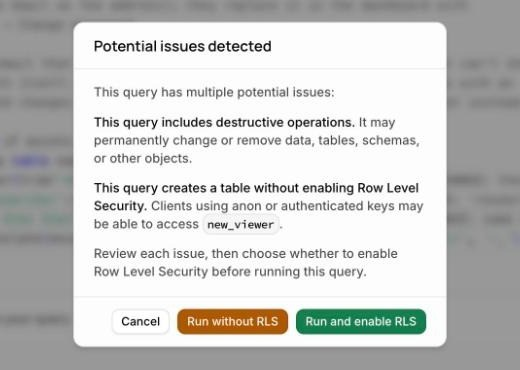
The SQL Editor's warning. Choose Run without RLS.
6Copy the one-time password
After a moment, Results shows one row: the email, role, name and a one-time password.
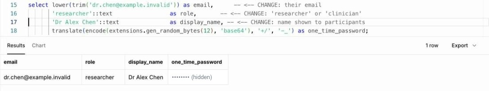
The result. The password is hidden in this guide. Yours shows 16 random letters and numbers.
Copy the password now and keep it somewhere private until you've sent it. It isn't stored anywhere you can read later. If it's lost, make a new one (section 14).
The account is ready at once. The email address is already confirmed, so no confirmation email is sent.
The SQL Editor saves your query, with the email in it, under Private in its side list. Once you're done, right-click it there and choose Delete query.
Handle the password carefully
Anyone with the email address and this password can sign in as the researcher. Never put it in the same message as the email address or the dashboard link, in a shared document, or in a group chat.
7Send the welcome details
Send two separate messages. The first can be an ordinary email:
Example welcome email (no password in it)
Subject: Your WearWise dashboard account
Hello Dr Chen,
Your WearWise researcher account is ready.
Dashboard: https://<your dashboard address>
Email: dr.chen@example.invalid
I'll send your one-time password separately. When you first sign in,
please read and accept the terms, then change the password: click your
name at the top right, then "Change password".
Participants share their data with you by giving you a one-time share
code from the WearWise app. Enter it under Participants → Add participant.
For Patch setup (installing firmware on patches), use Chrome or Edge.
Send the one-time password separately and privately: a phone call, a text message, or your organisation's password-sharing tool.
Part 3
The researcher's first sign-in
What the new researcher or clinician sees. You can send them this part.
8Sign in with the one-time password
Open the dashboard address in a web browser on a computer.
Type your email and the one-time password exactly as received. It's case-sensitive.
Click Sign in.
"Invalid login credentials"? Check for spaces before or after the password, and that you're on the right dashboard address. Still stuck? Ask the administrator for a new password (section 14).
The sign-in page.
9Accept the terms
The first time, the dashboard asks the person to read and agree to the Terms of Use, the Privacy Policy, the Collection Notice, the research information and the Researcher & clinician terms. Each one is a link.
Tick the box and click Continue.
Why the administrator can't do this
Agreeing to the terms is a personal decision. The script deliberately leaves it for the person to do at their first sign-in. When the terms are updated later, everyone is asked again.
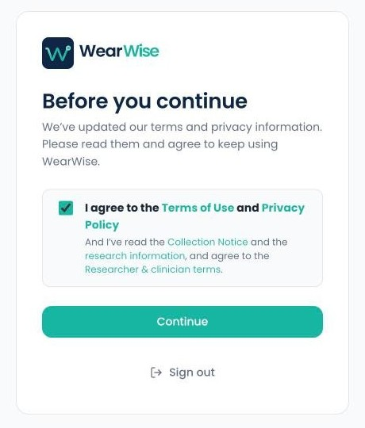
"Before you continue": tick, then Continue.
10Change the password
Right away, replace the one-time password with one only the person knows:
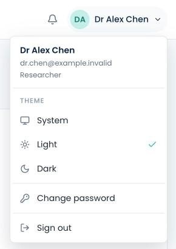
1. Click your name (top right) → Change password.
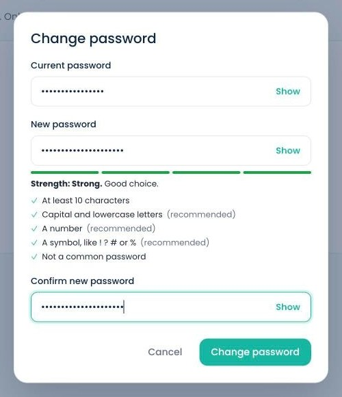
2. Current (one-time) password, then the new one twice.
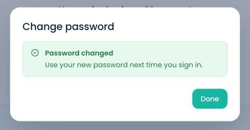
3. "Password changed". Click Done.
The new password needs at least 10 characters and can't be a common password. Capital and lowercase letters, a number and a symbol are recommended, and the strength bar shows how strong it is. The same menu has the light/dark Theme and Sign out.
11Ready: add participants
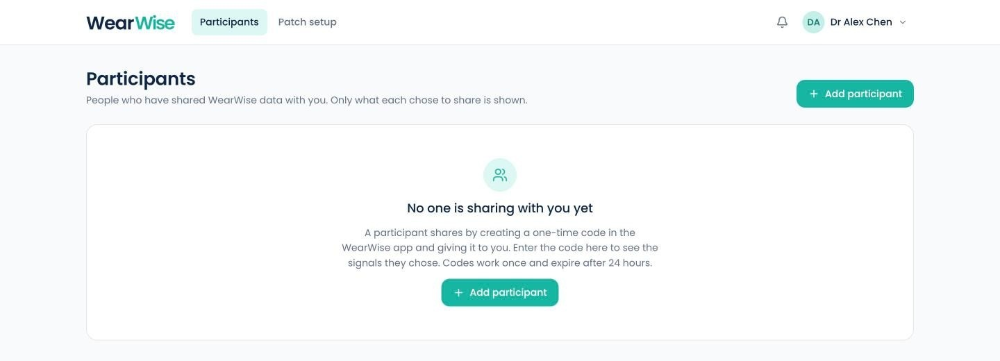
A new researcher's dashboard. "No one is sharing with you yet" until a participant gives them a share code.
The participant opens the WearWise app: Profile → Privacy & access → Share my data, ticks the signals to share, and taps Create code.
They give the researcher the code, for example AWWXK-59EF5. It works once and expires after 24 hours.
The researcher clicks + Add participant, types the code and clicks Add participant. The participant appears straight away.
The WearWise User Guide explains every dashboard screen (sections 16–22).
The participant's code.The researcher enters it.
Part 4
Check and manage access
Seeing who has access, promoting an existing account, resetting a password, and suspending someone.
Each task below uses another script from supabase/admin/, run the same way: SQL Editor → New query → paste the whole file → change the lines marked <-- CHANGE → Run.
12See every researcher and clinician
overview.sql is read-only: it changes nothing. It holds two queries, and the SQL Editor shows the result of the last one only (who shares what with whom). To see the list of researchers and clinicians, select the lines of query 1 with the mouse and click Run selected:
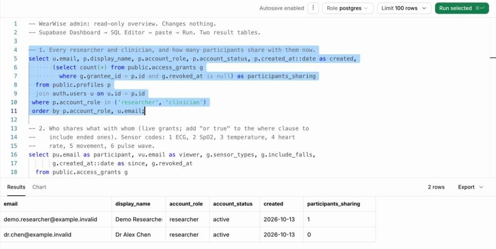
Query 1 selected, then "Run selected". Every researcher and clinician, their status, when they were created, and how many participants share with them now.
Run the whole file (nothing selected) to see query 2: each participant, the viewer they share with, which signals (1 ECG, 2 SpO₂, 3 temperature, 4 heart rate, 5 movement, 6 pulse wave), whether falls are included, and since when. This is a good list to review regularly, and to hand over when the project changes hands.
13Make an existing account a researcher
If the person already has a WearWise account (for example, they tried the app), create-viewer.sql stops with an error and changes nothing (section 17). Use set-role.sql instead: change their email and the role, then Run.
It works only if the account's email address is confirmed. "No rows returned" means no account with that email, or an unconfirmed one: nothing was changed.
The person is signed out everywhere and signs in again under the new role. Their own recordings are kept.
A researcher or clinician can't create share codes, so a separate email for dashboard work is usually better.
The same script with 'participant' turns a viewer back into a normal app user. They lose dashboard access at once.
14Locked out: a new one-time password
First, the person can try Forgot password? on the dashboard sign-in page, which emails a reset link. If the email can't reach them, run reset-password.sql with their email:
Like create-viewer.sql, it may show the "Potential issues detected" warning. Choose Run without RLS.
The result shows a new one-time password and account_found = true. (false means no account has that email, and nothing changed.)
The account is signed out everywhere, so the old password stops working. Send the new one privately, as in section 7. The person changes it after signing in.
15Suspend or reactivate someone
When a researcher leaves the study, or their access should pause, run set-status.sql with 'suspended' and their email:
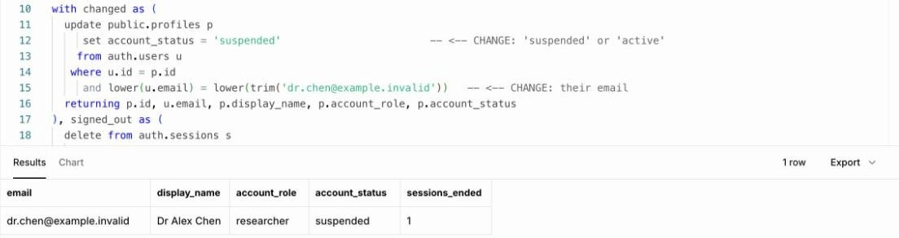
Suspended. The result confirms the new status and how many signed-in sessions were ended.
A suspended researcher or clinician sees nothing. The dashboard signs them out and says "You can't use this dashboard".
Every participant's share with them is hidden at once. Nothing is deleted: run the script again with 'active' and their access comes back as it was.
Suspending a participant hides their shared data from every viewer, and their unused share code stops working.
The change takes effect on the person's very next request. The database checks the account's status itself, whatever a browser still has open.
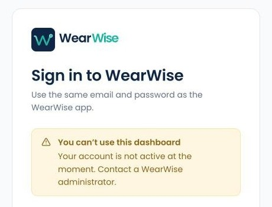
What a suspended researcher sees.
16Removing access for good
You want to…
Do this
End one participant's sharing with one researcher
The participant: app → Profile → Privacy & access → Remove access. Or the researcher: dashboard → the participant → Remove participant.
End everything a researcher can see, keeping the record
Suspend them (section 15). It can be undone.
Delete an account and all its data
A developer runs node supabase/scripts/admin.mjs delete-account <email> (Appendix B). It deletes the account's recording files first, then the account. This can't be undone. Don't delete users from Authentication → Users: that leaves their recording files behind in Storage.
Part 5
Help
Error messages, good practice, and the script itself.
17Troubleshooting
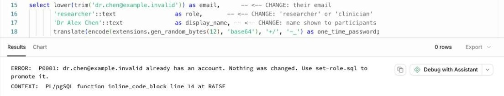
"… already has an account. Nothing was changed." The most common error. Use set-role.sql (section 13), or ask the person for a different email.
Message or problem
What to do
Not an email address: …
Check line 15: one address, inside single quotes, no spaces.
Role must be researcher or clinician, not "…"
Line 16 must say exactly 'researcher' or 'clinician'.
syntax error at or near …
A quote was deleted, or a name contains an apostrophe. Paste the whole file again and type '' for an apostrophe.
"Potential issues detected"
Expected for create-viewer.sql and reset-password.sql. Choose Run without RLS (section 5).
set-role.sql / set-status.sql: no rows returned
No account with that email (check spelling). For set-role.sql, the account's email may not be confirmed yet.
The one-time password was lost
Run reset-password.sql (section 14).
"Invalid login credentials" on first sign-in
Spaces copied with the password, or the wrong dashboard address (a test site instead of the real one). Otherwise reset the password.
"You can't use this dashboard"
The account is suspended (section 15).
Signed in, but sees My data and Sharing instead of Participants
That's a participant account. Make it a researcher with set-role.sql.
"Forgot password?" emails never arrive
The project needs its own email (SMTP) settings: Supabase → Authentication → Emails. See docs/operations/researcher-access.md.
Share code "invalid or expired"
Codes work once and last 24 hours, and a newer code replaces an unused one. Ask the participant for a new code.
Patch setup is missing or can't find the patch
Use Chrome or Edge on a computer, with a researcher or clinician account (see the Setup Guide).
18Good practice
One account per person. Never share a login between colleagues.
Use an email address the person doesn't use as a WearWise participant.
Send the one-time password separately from the email address and the dashboard link, and ask the person to change it at first sign-in.
Delete your saved queries in the SQL Editor once you're done: they contain email addresses.
Suspend accounts promptly when someone leaves the study.
Review overview.sql regularly, and whenever the project changes hands.
Only people who need to manage accounts should be members of the Supabase project.
WearWise is a research prototype, not a medical device. Its security practices are informed by relevant guidance; nothing about WearWise is certified.
AThe create-viewer.sql script
For administrators without the WearWise repository: this is the complete script, as of handover release v1.0.0. Copy all of it. The repository copy at supabase/admin/create-viewer.sql is authoritative if the two ever differ.
supabase/admin/create-viewer.sql
BFor developers: the command line
supabase/scripts/admin.mjs does the same tasks from a terminal, using a Supabase personal access token (Supabase → Account → Access Tokens). Read the token without showing it or saving it in your shell history:
Terminal (in the wearwise folder)
$ read -rs SB_PAT && export SB_PAT# paste the token, press Enter (nothing is shown)$ node supabase/scripts/admin.mjs create-viewer dr.chen@clinic.org clinician "Dr Chen"$ node supabase/scripts/admin.mjs set-role someone@example.org researcher$ node supabase/scripts/admin.mjs delete-account someone@example.org# dry run: shows what would go$ node supabase/scripts/admin.mjs delete-account someone@example.org --yes# deletes; can't be undone$ unset SB_PAT
A token is personal: each administrator creates their own, and never commits or shares it. Full details: docs/operations/researcher-access.md.
Made by the WearWise Project Team
Zakiul Atheef
Project Lead, Scrum Master, Technical Lead, Security Engineering Lead and Integration Lead
Hari Bethelli
Cloud & Data Engineer
Siri Bethelli
UI/UX & Data Visualisation Engineer
Thevindu Kodagoda Munasinghage
Security Engineer, Documentation Lead and QA & Testing Lead